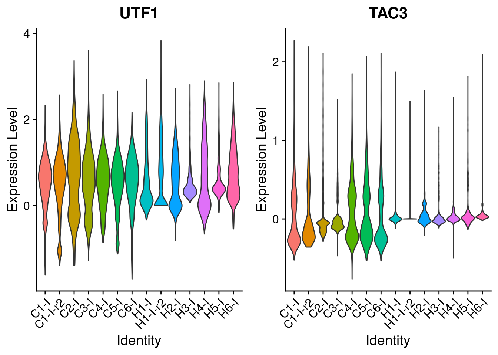
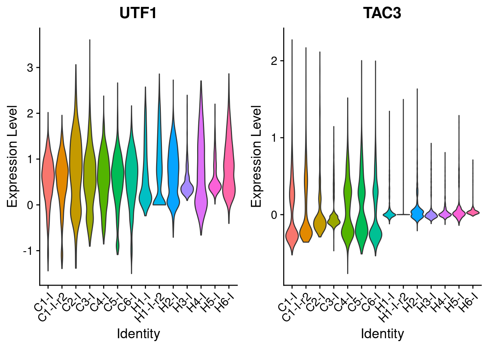
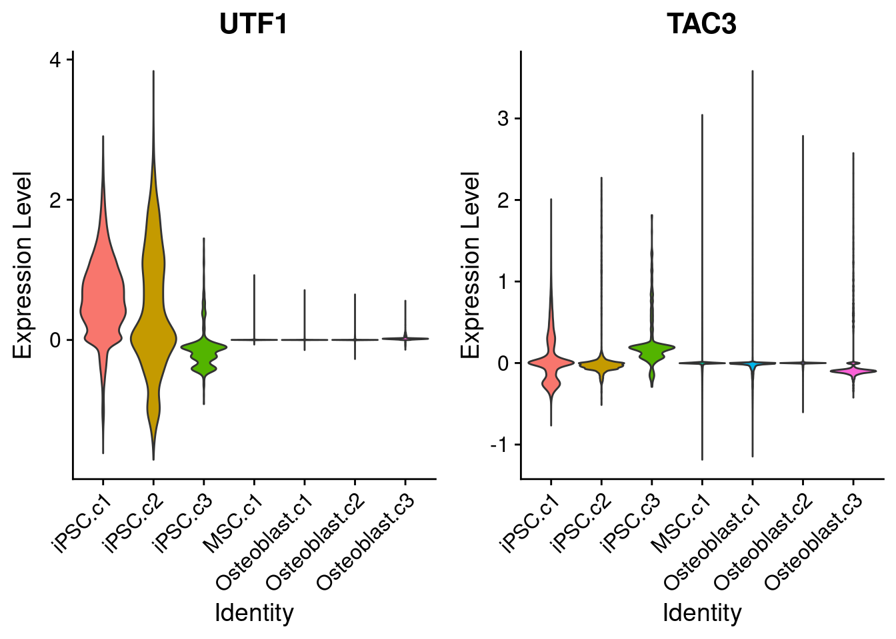
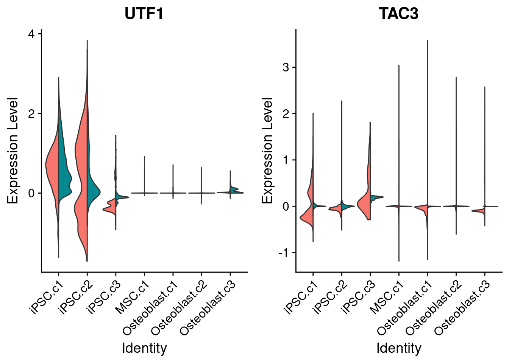

10x-plot-UTF1-TAC3
Genevieve Housman
7/8/2020
Last updated: 2020-07-08
Checks: 6 1
Knit directory: human-chimp-skeletal-scRNA/
This reproducible R Markdown analysis was created with workflowr (version 1.6.2). The Checks tab describes the reproducibility checks that were applied when the results were created. The Past versions tab lists the development history.
The R Markdown is untracked by Git. To know which version of the R Markdown file created these results, you’ll want to first commit it to the Git repo. If you’re still working on the analysis, you can ignore this warning. When you’re finished, you can run wflow_publish to commit the R Markdown file and build the HTML.
Great job! The global environment was empty. Objects defined in the global environment can affect the analysis in your R Markdown file in unknown ways. For reproduciblity it’s best to always run the code in an empty environment.
The command set.seed(20190719) was run prior to running the code in the R Markdown file. Setting a seed ensures that any results that rely on randomness, e.g. subsampling or permutations, are reproducible.
Great job! Recording the operating system, R version, and package versions is critical for reproducibility.
Nice! There were no cached chunks for this analysis, so you can be confident that you successfully produced the results during this run.
Great job! Using relative paths to the files within your workflowr project makes it easier to run your code on other machines.
Great! You are using Git for version control. Tracking code development and connecting the code version to the results is critical for reproducibility.
The results in this page were generated with repository version 6e47142. See the Past versions tab to see a history of the changes made to the R Markdown and HTML files.
Note that you need to be careful to ensure that all relevant files for the analysis have been committed to Git prior to generating the results (you can use wflow_publish or wflow_git_commit). workflowr only checks the R Markdown file, but you know if there are other scripts or data files that it depends on. Below is the status of the Git repository when the results were generated:
Ignored files:
Ignored: .Rhistory
Ignored: .Rproj.user/
Untracked files:
Untracked: analysis/10x-plot-UTF1-TAC3.Rmd
Untracked: data/HumanPrimaryCellAtlasData-SingleR
Untracked: data/HumanPrimaryCellAtlasDetails-SingleR.csv
Untracked: data/HumanPrimaryCellAtlasLabels-SingleR.csv
Untracked: data/alizarin-red-quant-total.csv
Untracked: data/cell_atlas_ref_panel
Untracked: data/cellranger-data-full/
Untracked: data/corrmatrix.ost
Untracked: data/facs-MSC-collection-summary-sample-avg.csv
Untracked: data/facs-MSC-collection-summary-species-avg.csv
Untracked: data/facs-MSC-collection-summary-total.csv
Untracked: data/oil-red-quant-total.csv
Untracked: data/scrna-batch-reformat.csv
Untracked: data/scrna-batch.csv
Untracked: output/comapre.nFeature.png
Untracked: output/compare.cellcount.png
Untracked: output/compare.nCount.png
Untracked: output/compare.nFeature.png
Untracked: output/compare.readstats.png
Untracked: output/compare.summary1.png
Untracked: output/compare.summary2.png
Untracked: output/mapping1.png
Untracked: output/mapping2.png
Untracked: output/qc-genespercell.png
Untracked: output/qc-mapping-extra.png
Untracked: output/qc-mapping-number-ortho-hg38.png
Untracked: output/qc-mapping-number-ortho-pTr6.png
Untracked: output/qc-mapping-number.png
Untracked: output/qc-mapping-proportion.png
Untracked: output/qc-q30bases.png
Untracked: output/qc-readcount.png
Untracked: output/qc-readsincells.png
Untracked: output/qc-readspercell.png
Untracked: output/qc-saturation.png
Untracked: output/qc-sppcount.png
Untracked: output/qc-sppprop.png
Untracked: output/qc-umipercell.png
Unstaged changes:
Modified: analysis/10x-data-plot-clusters-cellidentity.Rmd
Modified: analysis/de-MAST.R
Modified: analysis/de-MAST.err
Modified: analysis/de-MAST.out
Modified: analysis/de-MAST.sh
Modified: analysis/de-edgeR.R
Modified: analysis/de-edgeR.err
Modified: analysis/de-edgeR.out
Modified: analysis/de-edgeR.sh
Modified: analysis/de-limma.R
Modified: analysis/de-limma.err
Modified: analysis/de-limma.out
Modified: analysis/de-limma.sh
Modified: analysis/diff-exp-mast.R
Modified: analysis/diff-exp-mast.err
Modified: analysis/diff-exp-mast.out
Modified: analysis/diff-exp-mast.sh
Modified: analysis/diff-exp-negbinom.R
Modified: analysis/diff-exp-negbinom.err
Modified: analysis/diff-exp-negbinom.out
Modified: analysis/diff-exp-negbinom.sh
Modified: analysis/diff-exp-poisson.R
Modified: analysis/diff-exp-poisson.err
Modified: analysis/diff-exp-poisson.out
Modified: analysis/diff-exp-poisson.sh
Note that any generated files, e.g. HTML, png, CSS, etc., are not included in this status report because it is ok for generated content to have uncommitted changes.
There are no past versions. Publish this analysis with wflow_publish() to start tracking its development.
10X Data Cellranger Analysis - Examine the Effect of iPSC Gene Expression on Differentiation Efficiency
Researchers previously found that expression patterns of UTF1 (marker of poor differentiation) and TAC3 (marker of good differentiation) in iPSCs predict differentiation efficiencies (Jerber et al. 2020).
The analyses here assess this relationship in my human and chimpanzee iPSC-derived MSCs and iPSC-derived osteoblasts.
References * Jerber et al. 2020. Population-scale single-cell RNA-seq profiling across dopaminergic neuron differentiation. bioRxiv
#Load libraries
library(Seurat)
#library(dplyr)
#library(stringi)
#library(stringr)
#library(ggplot2)
#library(grid)
#library(gbm)
#library(colorspace)
#library(RColorBrewer)
#library(tidyr)
#library(UpSetR)
#library(reshape2)
#library(edgeR)
#library(matrixStats)#Define data
scrna <- "/data.filterMT.regMT.indv.log.10k.int.rds" #integrate across individuals - total
#scrna <- "/data.filter.reg.indv-cell.log.10k.int.ipsc.rds" #integrate across individuals - ipsc
#scrna <- "/data.filterMT.regMT.indv-cell.log.10k.int.msc.rds" #integrate across individuals - msc
#scrna <- "/data.filterMT.regMT.indv-cell.log.10k.int.osteo.rds" #integrate across individuals - osteo
#Load data
indv <- readRDS(paste0("data/cellranger-data-full",scrna))
#Reformat data for
indv@meta.data$Collection <- as.factor(indv@meta.data$Collection)
Idents(indv) <- factor(indv@meta.data$species, levels=c("Chimp","Human"))View UTF1 and TAC3 expression patterns in iPSCs
Expression varies across individuals:
(all cells from Time 0)
VlnPlot(subset(indv,subset=Stage=="Time 0"), assay="integrated", slot="data", features=c("UTF1","TAC3"), pt.size=0, group.by="Sample")
(all cells from ad hoc iPSC assignment)
VlnPlot(subset(indv,subset=AdHoc.Assign=="iPSC"), assay="integrated", slot="data", features=c("UTF1","TAC3"), pt.size=0, group.by="Sample")
Expression does not vary between unsupervised iPSC clusters:
VlnPlot(indv, assay="integrated", slot="data", features=c("UTF1","TAC3"), pt.size=0, group.by="Cluster")
Expression slightly varies between species within each unsupervised iPSC cluster:
VlnPlot(indv, assay="integrated", slot="data", features=c("UTF1","TAC3"), pt.size=0, group.by="Cluster", split.by="species")
Isolate UTF1 and TAC3 expression patterns in iPSCs
expression <- as.matrix(GetAssayData(indv, assay="integrated", slot="data"))[c("UTF1","TAC3"),]
utf1.tac3 <- data.frame(C1=rowMeans(expression[,which(indv@meta.data$Sample=="C1-I")]),
C1r=rowMeans(expression[,which(indv@meta.data$Sample=="C1-I-r2")]),
C2=rowMeans(expression[,which(indv@meta.data$Sample=="C2-I")]),
C3=rowMeans(expression[,which(indv@meta.data$Sample=="C3-I")]),
C4=rowMeans(expression[,which(indv@meta.data$Sample=="C4-I")]),
C5=rowMeans(expression[,which(indv@meta.data$Sample=="C5-I")]),
C6=rowMeans(expression[,which(indv@meta.data$Sample=="C6-I")]),
H1=rowMeans(expression[,which(indv@meta.data$Sample=="H1-I")]),
H1r=rowMeans(expression[,which(indv@meta.data$Sample=="H1-I-r2")]),
H2=rowMeans(expression[,which(indv@meta.data$Sample=="H2-I")]),
H3=rowMeans(expression[,which(indv@meta.data$Sample=="H3-I")]),
H4=rowMeans(expression[,which(indv@meta.data$Sample=="H4-I")]),
H5=rowMeans(expression[,which(indv@meta.data$Sample=="H5-I")]),
H6=rowMeans(expression[,which(indv@meta.data$Sample=="H6-I")]))
utf1.tac3 <- data.frame(t(utf1.tac3))
utf1.tac3$NumbTot.AdHoc <- c(length(indv@meta.data$AdHoc.Assign[which(indv@meta.data$Sample=="C1-O")]),
length(indv@meta.data$AdHoc.Assign[which(indv@meta.data$Sample=="C1-O-r2")]),
length(indv@meta.data$AdHoc.Assign[which(indv@meta.data$Sample=="C2-O")]),
length(indv@meta.data$AdHoc.Assign[which(indv@meta.data$Sample=="C3-O")]),
length(indv@meta.data$AdHoc.Assign[which(indv@meta.data$Sample=="C4-O")]),
length(indv@meta.data$AdHoc.Assign[which(indv@meta.data$Sample=="C5-O")]),
length(indv@meta.data$AdHoc.Assign[which(indv@meta.data$Sample=="C6-O")]),
length(indv@meta.data$AdHoc.Assign[which(indv@meta.data$Sample=="H1-O")]),
length(indv@meta.data$AdHoc.Assign[which(indv@meta.data$Sample=="H1-O-r2")]),
length(indv@meta.data$AdHoc.Assign[which(indv@meta.data$Sample=="H2-O")]),
length(indv@meta.data$AdHoc.Assign[which(indv@meta.data$Sample=="H3-O")]),
length(indv@meta.data$AdHoc.Assign[which(indv@meta.data$Sample=="H4-O")]),
length(indv@meta.data$AdHoc.Assign[which(indv@meta.data$Sample=="H5-O")]),
length(indv@meta.data$AdHoc.Assign[which(indv@meta.data$Sample=="H6-O")]))
utf1.tac3$NumbOst.AdHoc <- c(length(indv@meta.data$AdHoc.Assign[which(indv@meta.data$Sample=="C1-O" & indv@meta.data$AdHoc.Assign=="Osteoblast")]),
length(indv@meta.data$AdHoc.Assign[which(indv@meta.data$Sample=="C1-O-r2" & indv@meta.data$AdHoc.Assign=="Osteoblast")]),
length(indv@meta.data$AdHoc.Assign[which(indv@meta.data$Sample=="C2-O" & indv@meta.data$AdHoc.Assign=="Osteoblast")]),
length(indv@meta.data$AdHoc.Assign[which(indv@meta.data$Sample=="C3-O" & indv@meta.data$AdHoc.Assign=="Osteoblast")]),
length(indv@meta.data$AdHoc.Assign[which(indv@meta.data$Sample=="C4-O" & indv@meta.data$AdHoc.Assign=="Osteoblast")]),
length(indv@meta.data$AdHoc.Assign[which(indv@meta.data$Sample=="C5-O" & indv@meta.data$AdHoc.Assign=="Osteoblast")]),
length(indv@meta.data$AdHoc.Assign[which(indv@meta.data$Sample=="C6-O" & indv@meta.data$AdHoc.Assign=="Osteoblast")]),
length(indv@meta.data$AdHoc.Assign[which(indv@meta.data$Sample=="H1-O" & indv@meta.data$AdHoc.Assign=="Osteoblast")]),
length(indv@meta.data$AdHoc.Assign[which(indv@meta.data$Sample=="H1-O-r2" & indv@meta.data$AdHoc.Assign=="Osteoblast")]),
length(indv@meta.data$AdHoc.Assign[which(indv@meta.data$Sample=="H2-O" & indv@meta.data$AdHoc.Assign=="Osteoblast")]),
length(indv@meta.data$AdHoc.Assign[which(indv@meta.data$Sample=="H3-O" & indv@meta.data$AdHoc.Assign=="Osteoblast")]),
length(indv@meta.data$AdHoc.Assign[which(indv@meta.data$Sample=="H4-O" & indv@meta.data$AdHoc.Assign=="Osteoblast")]),
length(indv@meta.data$AdHoc.Assign[which(indv@meta.data$Sample=="H5-O" & indv@meta.data$AdHoc.Assign=="Osteoblast")]),
length(indv@meta.data$AdHoc.Assign[which(indv@meta.data$Sample=="H6-O" & indv@meta.data$AdHoc.Assign=="Osteoblast")]))
utf1.tac3$PropOst.AdHoc <- utf1.tac3$NumbOst.AdHoc/utf1.tac3$NumbTot.AdHoc
utf1.tac3$NumbTot.OstAdHoc <- c(length(indv@meta.data$OstAdHoc.Assign[which(indv@meta.data$Sample=="C1-O")]),
length(indv@meta.data$OstAdHoc.Assign[which(indv@meta.data$Sample=="C1-O-r2")]),
length(indv@meta.data$OstAdHoc.Assign[which(indv@meta.data$Sample=="C2-O")]),
length(indv@meta.data$OstAdHoc.Assign[which(indv@meta.data$Sample=="C3-O")]),
length(indv@meta.data$OstAdHoc.Assign[which(indv@meta.data$Sample=="C4-O")]),
length(indv@meta.data$OstAdHoc.Assign[which(indv@meta.data$Sample=="C5-O")]),
length(indv@meta.data$OstAdHoc.Assign[which(indv@meta.data$Sample=="C6-O")]),
length(indv@meta.data$OstAdHoc.Assign[which(indv@meta.data$Sample=="H1-O")]),
length(indv@meta.data$OstAdHoc.Assign[which(indv@meta.data$Sample=="H1-O-r2")]),
length(indv@meta.data$OstAdHoc.Assign[which(indv@meta.data$Sample=="H2-O")]),
length(indv@meta.data$OstAdHoc.Assign[which(indv@meta.data$Sample=="H3-O")]),
length(indv@meta.data$OstAdHoc.Assign[which(indv@meta.data$Sample=="H4-O")]),
length(indv@meta.data$OstAdHoc.Assign[which(indv@meta.data$Sample=="H5-O")]),
length(indv@meta.data$OstAdHoc.Assign[which(indv@meta.data$Sample=="H6-O")]))
utf1.tac3$NumbPre.OstAdHoc <- c(length(indv@meta.data$OstAdHoc.Assign[which(indv@meta.data$Sample=="C1-O" & indv@meta.data$OstAdHoc.Assign=="preosteoblast")]),
length(indv@meta.data$OstAdHoc.Assign[which(indv@meta.data$Sample=="C1-O-r2" & indv@meta.data$OstAdHoc.Assign=="preosteoblast")]),
length(indv@meta.data$OstAdHoc.Assign[which(indv@meta.data$Sample=="C2-O" & indv@meta.data$OstAdHoc.Assign=="preosteoblast")]),
length(indv@meta.data$OstAdHoc.Assign[which(indv@meta.data$Sample=="C3-O" & indv@meta.data$OstAdHoc.Assign=="preosteoblast")]),
length(indv@meta.data$OstAdHoc.Assign[which(indv@meta.data$Sample=="C4-O" & indv@meta.data$OstAdHoc.Assign=="preosteoblast")]),
length(indv@meta.data$OstAdHoc.Assign[which(indv@meta.data$Sample=="C5-O" & indv@meta.data$OstAdHoc.Assign=="preosteoblast")]),
length(indv@meta.data$OstAdHoc.Assign[which(indv@meta.data$Sample=="C6-O" & indv@meta.data$OstAdHoc.Assign=="preosteoblast")]),
length(indv@meta.data$OstAdHoc.Assign[which(indv@meta.data$Sample=="H1-O" & indv@meta.data$OstAdHoc.Assign=="preosteoblast")]),
length(indv@meta.data$OstAdHoc.Assign[which(indv@meta.data$Sample=="H1-O-r2" & indv@meta.data$OstAdHoc.Assign=="preosteoblast")]),
length(indv@meta.data$OstAdHoc.Assign[which(indv@meta.data$Sample=="H2-O" & indv@meta.data$OstAdHoc.Assign=="preosteoblast")]),
length(indv@meta.data$OstAdHoc.Assign[which(indv@meta.data$Sample=="H3-O" & indv@meta.data$OstAdHoc.Assign=="preosteoblast")]),
length(indv@meta.data$OstAdHoc.Assign[which(indv@meta.data$Sample=="H4-O" & indv@meta.data$OstAdHoc.Assign=="preosteoblast")]),
length(indv@meta.data$OstAdHoc.Assign[which(indv@meta.data$Sample=="H5-O" & indv@meta.data$OstAdHoc.Assign=="preosteoblast")]),
length(indv@meta.data$OstAdHoc.Assign[which(indv@meta.data$Sample=="H6-O" & indv@meta.data$OstAdHoc.Assign=="preosteoblast")]))
utf1.tac3$NumbObl.OstAdHoc <- c(length(indv@meta.data$OstAdHoc.Assign[which(indv@meta.data$Sample=="C1-O" & indv@meta.data$OstAdHoc.Assign=="osteoblast")]),
length(indv@meta.data$OstAdHoc.Assign[which(indv@meta.data$Sample=="C1-O-r2" & indv@meta.data$OstAdHoc.Assign=="osteoblast")]),
length(indv@meta.data$OstAdHoc.Assign[which(indv@meta.data$Sample=="C2-O" & indv@meta.data$OstAdHoc.Assign=="osteoblast")]),
length(indv@meta.data$OstAdHoc.Assign[which(indv@meta.data$Sample=="C3-O" & indv@meta.data$OstAdHoc.Assign=="osteoblast")]),
length(indv@meta.data$OstAdHoc.Assign[which(indv@meta.data$Sample=="C4-O" & indv@meta.data$OstAdHoc.Assign=="osteoblast")]),
length(indv@meta.data$OstAdHoc.Assign[which(indv@meta.data$Sample=="C5-O" & indv@meta.data$OstAdHoc.Assign=="osteoblast")]),
length(indv@meta.data$OstAdHoc.Assign[which(indv@meta.data$Sample=="C6-O" & indv@meta.data$OstAdHoc.Assign=="osteoblast")]),
length(indv@meta.data$OstAdHoc.Assign[which(indv@meta.data$Sample=="H1-O" & indv@meta.data$OstAdHoc.Assign=="osteoblast")]),
length(indv@meta.data$OstAdHoc.Assign[which(indv@meta.data$Sample=="H1-O-r2" & indv@meta.data$OstAdHoc.Assign=="osteoblast")]),
length(indv@meta.data$OstAdHoc.Assign[which(indv@meta.data$Sample=="H2-O" & indv@meta.data$OstAdHoc.Assign=="osteoblast")]),
length(indv@meta.data$OstAdHoc.Assign[which(indv@meta.data$Sample=="H3-O" & indv@meta.data$OstAdHoc.Assign=="osteoblast")]),
length(indv@meta.data$OstAdHoc.Assign[which(indv@meta.data$Sample=="H4-O" & indv@meta.data$OstAdHoc.Assign=="osteoblast")]),
length(indv@meta.data$OstAdHoc.Assign[which(indv@meta.data$Sample=="H5-O" & indv@meta.data$OstAdHoc.Assign=="osteoblast")]),
length(indv@meta.data$OstAdHoc.Assign[which(indv@meta.data$Sample=="H6-O" & indv@meta.data$OstAdHoc.Assign=="osteoblast")]))
utf1.tac3$NumbEmb.OstAdHoc <- c(length(indv@meta.data$OstAdHoc.Assign[which(indv@meta.data$Sample=="C1-O" & indv@meta.data$OstAdHoc.Assign=="embedding osteoblast")]),
length(indv@meta.data$OstAdHoc.Assign[which(indv@meta.data$Sample=="C1-O-r2" & indv@meta.data$OstAdHoc.Assign=="embedding osteoblast")]),
length(indv@meta.data$OstAdHoc.Assign[which(indv@meta.data$Sample=="C2-O" & indv@meta.data$OstAdHoc.Assign=="embedding osteoblast")]),
length(indv@meta.data$OstAdHoc.Assign[which(indv@meta.data$Sample=="C3-O" & indv@meta.data$OstAdHoc.Assign=="embedding osteoblast")]),
length(indv@meta.data$OstAdHoc.Assign[which(indv@meta.data$Sample=="C4-O" & indv@meta.data$OstAdHoc.Assign=="embedding osteoblast")]),
length(indv@meta.data$OstAdHoc.Assign[which(indv@meta.data$Sample=="C5-O" & indv@meta.data$OstAdHoc.Assign=="embedding osteoblast")]),
length(indv@meta.data$OstAdHoc.Assign[which(indv@meta.data$Sample=="C6-O" & indv@meta.data$OstAdHoc.Assign=="embedding osteoblast")]),
length(indv@meta.data$OstAdHoc.Assign[which(indv@meta.data$Sample=="H1-O" & indv@meta.data$OstAdHoc.Assign=="embedding osteoblast")]),
length(indv@meta.data$OstAdHoc.Assign[which(indv@meta.data$Sample=="H1-O-r2" & indv@meta.data$OstAdHoc.Assign=="embedding osteoblast")]),
length(indv@meta.data$OstAdHoc.Assign[which(indv@meta.data$Sample=="H2-O" & indv@meta.data$OstAdHoc.Assign=="embedding osteoblast")]),
length(indv@meta.data$OstAdHoc.Assign[which(indv@meta.data$Sample=="H3-O" & indv@meta.data$OstAdHoc.Assign=="embedding osteoblast")]),
length(indv@meta.data$OstAdHoc.Assign[which(indv@meta.data$Sample=="H4-O" & indv@meta.data$OstAdHoc.Assign=="embedding osteoblast")]),
length(indv@meta.data$OstAdHoc.Assign[which(indv@meta.data$Sample=="H5-O" & indv@meta.data$OstAdHoc.Assign=="embedding osteoblast")]),
length(indv@meta.data$OstAdHoc.Assign[which(indv@meta.data$Sample=="H6-O" & indv@meta.data$OstAdHoc.Assign=="embedding osteoblast")]))
utf1.tac3$PropPre.OstAdHoc <- utf1.tac3$NumbPre.OstAdHoc/utf1.tac3$NumbTot.OstAdHoc
utf1.tac3$PropObl.OstAdHoc <- utf1.tac3$NumbObl.OstAdHoc/utf1.tac3$NumbTot.OstAdHoc
utf1.tac3$PropEmb.OstAdHoc <- utf1.tac3$NumbEmb.OstAdHoc/utf1.tac3$NumbTot.OstAdHoc
utf1.tac3$NumbTot.Cluster <- c(length(indv@meta.data$Cluster[which(indv@meta.data$Sample=="C1-O")]),
length(indv@meta.data$Cluster[which(indv@meta.data$Sample=="C1-O-r2")]),
length(indv@meta.data$Cluster[which(indv@meta.data$Sample=="C2-O")]),
length(indv@meta.data$Cluster[which(indv@meta.data$Sample=="C3-O")]),
length(indv@meta.data$Cluster[which(indv@meta.data$Sample=="C4-O")]),
length(indv@meta.data$Cluster[which(indv@meta.data$Sample=="C5-O")]),
length(indv@meta.data$Cluster[which(indv@meta.data$Sample=="C6-O")]),
length(indv@meta.data$Cluster[which(indv@meta.data$Sample=="H1-O")]),
length(indv@meta.data$Cluster[which(indv@meta.data$Sample=="H1-O-r2")]),
length(indv@meta.data$Cluster[which(indv@meta.data$Sample=="H2-O")]),
length(indv@meta.data$Cluster[which(indv@meta.data$Sample=="H3-O")]),
length(indv@meta.data$Cluster[which(indv@meta.data$Sample=="H4-O")]),
length(indv@meta.data$Cluster[which(indv@meta.data$Sample=="H5-O")]),
length(indv@meta.data$Cluster[which(indv@meta.data$Sample=="H6-O")]))
utf1.tac3$NumbOst1.Cluster <- c(length(indv@meta.data$Cluster[which(indv@meta.data$Sample=="C1-O" & indv@meta.data$Cluster=="Osteoblast.c1")]),
length(indv@meta.data$Cluster[which(indv@meta.data$Sample=="C1-O-r2" & indv@meta.data$Cluster=="Osteoblast.c1")]),
length(indv@meta.data$Cluster[which(indv@meta.data$Sample=="C2-O" & indv@meta.data$Cluster=="Osteoblast.c1")]),
length(indv@meta.data$Cluster[which(indv@meta.data$Sample=="C3-O" & indv@meta.data$Cluster=="Osteoblast.c1")]),
length(indv@meta.data$Cluster[which(indv@meta.data$Sample=="C4-O" & indv@meta.data$Cluster=="Osteoblast.c1")]),
length(indv@meta.data$Cluster[which(indv@meta.data$Sample=="C5-O" & indv@meta.data$Cluster=="Osteoblast.c1")]),
length(indv@meta.data$Cluster[which(indv@meta.data$Sample=="C6-O" & indv@meta.data$Cluster=="Osteoblast.c1")]),
length(indv@meta.data$Cluster[which(indv@meta.data$Sample=="H1-O" & indv@meta.data$Cluster=="Osteoblast.c1")]),
length(indv@meta.data$Cluster[which(indv@meta.data$Sample=="H1-O-r2" & indv@meta.data$Cluster=="Osteoblast.c1")]),
length(indv@meta.data$Cluster[which(indv@meta.data$Sample=="H2-O" & indv@meta.data$Cluster=="Osteoblast.c1")]),
length(indv@meta.data$Cluster[which(indv@meta.data$Sample=="H3-O" & indv@meta.data$Cluster=="Osteoblast.c1")]),
length(indv@meta.data$Cluster[which(indv@meta.data$Sample=="H4-O" & indv@meta.data$Cluster=="Osteoblast.c1")]),
length(indv@meta.data$Cluster[which(indv@meta.data$Sample=="H5-O" & indv@meta.data$Cluster=="Osteoblast.c1")]),
length(indv@meta.data$AdHoc.Assign[which(indv@meta.data$Sample=="H6-O" & indv@meta.data$Cluster=="Osteoblast.c1")]))
utf1.tac3$NumbOst2.Cluster <- c(length(indv@meta.data$Cluster[which(indv@meta.data$Sample=="C1-O" & indv@meta.data$Cluster=="Osteoblast.c2")]),
length(indv@meta.data$Cluster[which(indv@meta.data$Sample=="C1-O-r2" & indv@meta.data$Cluster=="Osteoblast.c2")]),
length(indv@meta.data$Cluster[which(indv@meta.data$Sample=="C2-O" & indv@meta.data$Cluster=="Osteoblast.c2")]),
length(indv@meta.data$Cluster[which(indv@meta.data$Sample=="C3-O" & indv@meta.data$Cluster=="Osteoblast.c2")]),
length(indv@meta.data$Cluster[which(indv@meta.data$Sample=="C4-O" & indv@meta.data$Cluster=="Osteoblast.c2")]),
length(indv@meta.data$Cluster[which(indv@meta.data$Sample=="C5-O" & indv@meta.data$Cluster=="Osteoblast.c2")]),
length(indv@meta.data$Cluster[which(indv@meta.data$Sample=="C6-O" & indv@meta.data$Cluster=="Osteoblast.c2")]),
length(indv@meta.data$Cluster[which(indv@meta.data$Sample=="H1-O" & indv@meta.data$Cluster=="Osteoblast.c2")]),
length(indv@meta.data$Cluster[which(indv@meta.data$Sample=="H1-O-r2" & indv@meta.data$Cluster=="Osteoblast.c2")]),
length(indv@meta.data$Cluster[which(indv@meta.data$Sample=="H2-O" & indv@meta.data$Cluster=="Osteoblast.c2")]),
length(indv@meta.data$Cluster[which(indv@meta.data$Sample=="H3-O" & indv@meta.data$Cluster=="Osteoblast.c2")]),
length(indv@meta.data$Cluster[which(indv@meta.data$Sample=="H4-O" & indv@meta.data$Cluster=="Osteoblast.c2")]),
length(indv@meta.data$Cluster[which(indv@meta.data$Sample=="H5-O" & indv@meta.data$Cluster=="Osteoblast.c2")]),
length(indv@meta.data$AdHoc.Assign[which(indv@meta.data$Sample=="H6-O" & indv@meta.data$Cluster=="Osteoblast.c2")]))
utf1.tac3$NumbOst3.Cluster <- c(length(indv@meta.data$Cluster[which(indv@meta.data$Sample=="C1-O" & indv@meta.data$Cluster=="Osteoblast.c3")]),
length(indv@meta.data$Cluster[which(indv@meta.data$Sample=="C1-O-r2" & indv@meta.data$Cluster=="Osteoblast.c3")]),
length(indv@meta.data$Cluster[which(indv@meta.data$Sample=="C2-O" & indv@meta.data$Cluster=="Osteoblast.c3")]),
length(indv@meta.data$Cluster[which(indv@meta.data$Sample=="C3-O" & indv@meta.data$Cluster=="Osteoblast.c3")]),
length(indv@meta.data$Cluster[which(indv@meta.data$Sample=="C4-O" & indv@meta.data$Cluster=="Osteoblast.c3")]),
length(indv@meta.data$Cluster[which(indv@meta.data$Sample=="C5-O" & indv@meta.data$Cluster=="Osteoblast.c3")]),
length(indv@meta.data$Cluster[which(indv@meta.data$Sample=="C6-O" & indv@meta.data$Cluster=="Osteoblast.c3")]),
length(indv@meta.data$Cluster[which(indv@meta.data$Sample=="H1-O" & indv@meta.data$Cluster=="Osteoblast.c3")]),
length(indv@meta.data$Cluster[which(indv@meta.data$Sample=="H1-O-r2" & indv@meta.data$Cluster=="Osteoblast.c3")]),
length(indv@meta.data$Cluster[which(indv@meta.data$Sample=="H2-O" & indv@meta.data$Cluster=="Osteoblast.c3")]),
length(indv@meta.data$Cluster[which(indv@meta.data$Sample=="H3-O" & indv@meta.data$Cluster=="Osteoblast.c3")]),
length(indv@meta.data$Cluster[which(indv@meta.data$Sample=="H4-O" & indv@meta.data$Cluster=="Osteoblast.c3")]),
length(indv@meta.data$Cluster[which(indv@meta.data$Sample=="H5-O" & indv@meta.data$Cluster=="Osteoblast.c3")]),
length(indv@meta.data$AdHoc.Assign[which(indv@meta.data$Sample=="H6-O" & indv@meta.data$Cluster=="Osteoblast.c3")]))
utf1.tac3$PropOst1.Cluster <- utf1.tac3$NumbOst1.Cluster/utf1.tac3$NumbTot.Cluster
utf1.tac3$PropOst2.Cluster <- utf1.tac3$NumbOst2.Cluster/utf1.tac3$NumbTot.Cluster
utf1.tac3$PropOst3.Cluster <- utf1.tac3$NumbOst3.Cluster/utf1.tac3$NumbTot.Cluster
par(mfrow=c(1,2))
cor(utf1.tac3$UTF1, utf1.tac3$PropOst.AdHoc, method="pearson") #pearson correlation = -0.61[1] -0.6128982plot(utf1.tac3$UTF1, utf1.tac3$PropOst.AdHoc, xlab="UTF1 Expression", ylab="Proportion of Osteogenic Cells (ad hoc)", pch=c(rep(19,7),rep(1,7)))
abline(lm(utf1.tac3$PropOst.AdHoc~utf1.tac3$UTF1), col="red")
text(x=0.75, y=0.45, labels="r = -0.61", col="red")
cor(utf1.tac3$TAC3, utf1.tac3$PropOst.AdHoc, method="pearson") #pearson correlation = 0.20[1] 0.197841plot(utf1.tac3$TAC3, utf1.tac3$PropOst.AdHoc, xlab="TAC3 Expression", ylab="Proportion of Osteogenic Cells (ad hoc)", pch=c(rep(19,7),rep(1,7)))
abline(lm(utf1.tac3$PropOst.AdHoc~utf1.tac3$TAC3), col="red")
text(x=0.09, y=0.75, labels="r = 0.20", col="red")
par(mfrow=c(1,2))
cor(utf1.tac3$UTF1, utf1.tac3$PropPre.OstAdHoc, method="pearson") #pearson correlation = -0.27[1] -0.2672059plot(utf1.tac3$UTF1, utf1.tac3$PropPre.OstAdHoc, xlab="UTF1 Expression", ylab="Proportion of Preosteoblasts (ost ad hoc)", pch=c(rep(19,7),rep(1,7)))
abline(lm(utf1.tac3$PropPre.OstAdHoc~utf1.tac3$UTF1), col="red")
text(x=0.75, y=0.02, labels="r = -0.72", col="red")
cor(utf1.tac3$TAC3, utf1.tac3$PropPre.OstAdHoc, method="pearson") #pearson correlation = 0.57[1] 0.5730435plot(utf1.tac3$TAC3, utf1.tac3$PropPre.OstAdHoc, xlab="TAC3 Expression", ylab="Proportion of Preosteoblasts (ost ad hoc)", pch=c(rep(19,7),rep(1,7)))
abline(lm(utf1.tac3$PropPre.OstAdHoc~utf1.tac3$TAC3), col="red")
text(x=0.09, y=0.04, labels="r = 0.57", col="red")
par(mfrow=c(1,2))
cor(utf1.tac3$UTF1, utf1.tac3$PropObl.OstAdHoc, method="pearson") #pearson correlation = -0.32[1] -0.321859plot(utf1.tac3$UTF1, utf1.tac3$PropObl.OstAdHoc, xlab="UTF1 Expression", ylab="Proportion of Osteoblasts (ost ad hoc)", pch=c(rep(19,7),rep(1,7)))
abline(lm(utf1.tac3$PropObl.OstAdHoc~utf1.tac3$UTF1), col="red")
text(x=0.75, y=0.02, labels="r = -0.32", col="red")
cor(utf1.tac3$TAC3, utf1.tac3$PropObl.OstAdHoc, method="pearson") #pearson correlation = -0.04[1] -0.03680169plot(utf1.tac3$TAC3, utf1.tac3$PropObl.OstAdHoc, xlab="TAC3 Expression", ylab="Proportion of Osteoblasts (ost ad hoc)", pch=c(rep(19,7),rep(1,7)))
abline(lm(utf1.tac3$PropObl.OstAdHoc~utf1.tac3$TAC3), col="red")
text(x=0.09, y=0.02, labels="r = -0.03", col="red")
par(mfrow=c(1,2))
cor(utf1.tac3$UTF1, utf1.tac3$PropEmb.OstAdHoc, method="pearson") #pearson correlation = -0.44[1] -0.4367683plot(utf1.tac3$UTF1, utf1.tac3$PropEmb.OstAdHoc, xlab="UTF1 Expression", ylab="Proportion of Embedding Osteoblasts (ost ad hoc)", pch=c(rep(19,7),rep(1,7)))
abline(lm(utf1.tac3$PropEmb.OstAdHoc~utf1.tac3$UTF1), col="red")
text(x=0.75, y=0.5, labels="r = -0.44", col="red")
cor(utf1.tac3$TAC3, utf1.tac3$PropEmb.OstAdHoc, method="pearson") #pearson correlation = 0.02[1] 0.02316718plot(utf1.tac3$TAC3, utf1.tac3$PropEmb.OstAdHoc, xlab="TAC3 Expression", ylab="Proportion of Embedding Osteoblasts (ost ad hoc)", pch=c(rep(19,7),rep(1,7)))
abline(lm(utf1.tac3$PropEmb.OstAdHoc~utf1.tac3$TAC3), col="red")
text(x=0.09, y=0.62, labels="r = 0.02", col="red")
par(mfrow=c(1,2))
cor(utf1.tac3$UTF1, utf1.tac3$PropOst1.Cluster, method="pearson") #pearson correlation = 0.18[1] 0.1768611plot(utf1.tac3$UTF1, utf1.tac3$PropOst1.Cluster, xlab="UTF1 Expression", ylab="Proportion of Osteogenic Cluster 1", pch=c(rep(19,7),rep(1,7)))
abline(lm(utf1.tac3$PropOst1.Cluster~utf1.tac3$UTF1), col="red")
text(x=0.75, y=0.6, labels="r = 0.18", col="red")
cor(utf1.tac3$TAC3, utf1.tac3$PropOst1.Cluster, method="pearson") #pearson correlation = 0.79[1] 0.7929326plot(utf1.tac3$TAC3, utf1.tac3$PropOst1.Cluster, xlab="TAC3 Expression", ylab="Proportion of Osteogenic Cluster 1", pch=c(rep(19,7),rep(1,7)))
abline(lm(utf1.tac3$PropOst1.Cluster~utf1.tac3$TAC3), col="red")
text(x=0.08, y=0.75, labels="r = 0.79", col="red")
par(mfrow=c(1,2))
cor(utf1.tac3$UTF1, utf1.tac3$PropOst2.Cluster, method="pearson") #pearson correlation = -0.13[1] -0.1320942plot(utf1.tac3$UTF1, utf1.tac3$PropOst2.Cluster, xlab="UTF1 Expression", ylab="Proportion of Osteogenic Cluster 2", pch=c(rep(19,7),rep(1,7)))
abline(lm(utf1.tac3$PropOst2.Cluster~utf1.tac3$UTF1), col="red")
text(x=0.75, y=0.35, labels="r = -0.13", col="red")
cor(utf1.tac3$TAC3, utf1.tac3$PropOst2.Cluster, method="pearson") #pearson correlation = -0.56[1] -0.5636116plot(utf1.tac3$TAC3, utf1.tac3$PropOst2.Cluster, xlab="TAC3 Expression", ylab="Proportion of Osteogenic Cluster 2", pch=c(rep(19,7),rep(1,7)))
abline(lm(utf1.tac3$PropOst2.Cluster~utf1.tac3$TAC3), col="red")
text(x=0.09, y=0.2, labels="r = -0.56", col="red")
par(mfrow=c(1,2))
cor(utf1.tac3$UTF1, utf1.tac3$PropOst3.Cluster, method="pearson") #pearson correlation = -0.13[1] -0.1327855plot(utf1.tac3$UTF1, utf1.tac3$PropOst3.Cluster, xlab="UTF1 Expression", ylab="Proportion of Osteogenic Cluster 3", pch=c(rep(19,7),rep(1,7)))
abline(lm(utf1.tac3$PropOst3.Cluster~utf1.tac3$UTF1), col="red")
text(x=0.75, y=0.1, labels="r = -0.13", col="red")
cor(utf1.tac3$TAC3, utf1.tac3$PropOst3.Cluster, method="pearson") #pearson correlation = -0.30[1] -0.2991291plot(utf1.tac3$TAC3, utf1.tac3$PropOst3.Cluster, xlab="TAC3 Expression", ylab="Proportion of Osteogenic Cluster 3", pch=c(rep(19,7),rep(1,7)))
abline(lm(utf1.tac3$PropOst3.Cluster~utf1.tac3$TAC3), col="red")
text(x=0.08, y=0.05, labels="r = -0.30", col="red")
#Stage
#Cluster
#AdHoc.Assign
#OstAdHoc.Assign
#check relationship between UTF1/TAC3 and CD73, CD105, Alizarin, OilRed
sessionInfo()R version 3.6.1 (2019-07-05)
Platform: x86_64-pc-linux-gnu (64-bit)
Running under: Scientific Linux 7.4 (Nitrogen)
Matrix products: default
BLAS/LAPACK: /software/openblas-0.2.19-el7-x86_64/lib/libopenblas_haswellp-r0.2.19.so
locale:
[1] LC_CTYPE=en_US.UTF-8 LC_NUMERIC=C
[3] LC_TIME=en_US.UTF-8 LC_COLLATE=en_US.UTF-8
[5] LC_MONETARY=en_US.UTF-8 LC_MESSAGES=en_US.UTF-8
[7] LC_PAPER=en_US.UTF-8 LC_NAME=C
[9] LC_ADDRESS=C LC_TELEPHONE=C
[11] LC_MEASUREMENT=en_US.UTF-8 LC_IDENTIFICATION=C
attached base packages:
[1] stats graphics grDevices utils datasets methods base
other attached packages:
[1] Seurat_3.1.3
loaded via a namespace (and not attached):
[1] tsne_0.1-3 nlme_3.1-140 bitops_1.0-6
[4] fs_1.3.1 RcppAnnoy_0.0.12 RColorBrewer_1.1-2
[7] httr_1.4.1 rprojroot_1.3-2 sctransform_0.2.0
[10] tools_3.6.1 backports_1.1.4 R6_2.4.0
[13] irlba_2.3.3 KernSmooth_2.23-15 uwot_0.1.5
[16] lazyeval_0.2.2 colorspace_1.4-1 npsurv_0.4-0
[19] gridExtra_2.3 tidyselect_1.1.0 compiler_3.6.1
[22] git2r_0.26.1 plotly_4.9.0 labeling_0.3
[25] caTools_1.17.1.2 scales_1.1.0 lmtest_0.9-37
[28] ggridges_0.5.1 pbapply_1.4-0 stringr_1.4.0
[31] digest_0.6.20 rmarkdown_1.13 pkgconfig_2.0.2
[34] htmltools_0.3.6 bibtex_0.4.2 htmlwidgets_1.3
[37] rlang_0.4.6 farver_2.0.1 zoo_1.8-6
[40] jsonlite_1.6 ica_1.0-2 gtools_3.8.1
[43] dplyr_0.8.3 magrittr_1.5 Matrix_1.2-18
[46] Rcpp_1.0.3 munsell_0.5.0 ape_5.3
[49] reticulate_1.12 lifecycle_0.1.0 stringi_1.4.3
[52] yaml_2.2.0 gbRd_0.4-11 MASS_7.3-51.4
[55] gplots_3.0.1.1 Rtsne_0.15 plyr_1.8.4
[58] grid_3.6.1 parallel_3.6.1 gdata_2.18.0
[61] listenv_0.7.0 promises_1.0.1 ggrepel_0.8.1
[64] crayon_1.3.4 lattice_0.20-38 cowplot_1.0.0
[67] splines_3.6.1 knitr_1.23 pillar_1.4.2
[70] igraph_1.2.4.1 reshape2_1.4.3 future.apply_1.3.0
[73] codetools_0.2-16 leiden_0.3.1 glue_1.3.1
[76] evaluate_0.14 lsei_1.2-0 metap_1.1
[79] RcppParallel_4.4.3 data.table_1.12.8 vctrs_0.3.1
[82] png_0.1-7 httpuv_1.5.1 Rdpack_0.11-0
[85] gtable_0.3.0 RANN_2.6.1 purrr_0.3.4
[88] tidyr_1.1.0 future_1.14.0 assertthat_0.2.1
[91] ggplot2_3.2.1 xfun_0.8 rsvd_1.0.1
[94] later_0.8.0 survival_2.44-1.1 viridisLite_0.3.0
[97] tibble_2.1.3 workflowr_1.6.2 cluster_2.1.0
[100] globals_0.12.4 fitdistrplus_1.0-14 ROCR_1.0-7